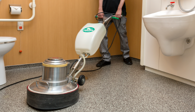
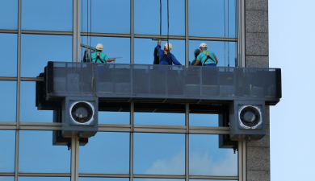
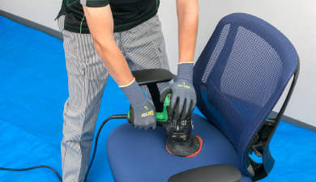
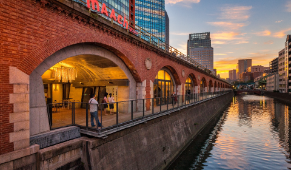
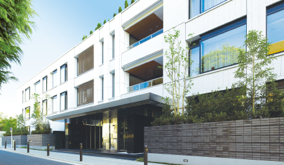
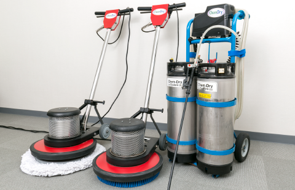

事業紹介
清掃管理
日勤正社員の80％が専門資格取得。清掃管理の更なる高品質･高効率化を追求。
清掃は、建物管理の柱の一つとなる業務です。当社では、日勤正社員の80％が「ビルクリーニング技能士」の国家資格を取得。豊富な経験で培った確かな技能･ノウハウと効率的な清掃工数管理をもとに、最新の機材や薬剤を積極的に導入し、常に清掃管理の高品質･高効率化を追求しています。また、一人ひとりの清掃クルーが清掃業務の役割を理解し、技能やマナーのレベルアップを図り、ホスピタリティを大切にしたサービスで、清潔で快適な環境を支えています。
オフィスビル清掃
- 日常清掃
- エントランス、ロビー、廊下、階段、トイレなどの共用部や専用部オフィスフロアの清掃、ゴミ収集を行います。建物の規模や仕様、お客様の要望に沿った清掃プランのもと、経験豊富な清掃クルーを効果的に配置、限られた時間内に効率よく清掃作業を進め、ビルの快適環境を維持します。
- 
- 定期清掃
- カーペットクリーニング、石床の洗浄、樹脂タイルのワックス塗布等、日常清掃で対応しきれない部分の清掃を定期的に行います。汚れを落とし、清潔さと美観を回復させるための作業を、素材や汚れに応じた機材･薬剤を活用し、徹底して行います。定期清掃の実施によって、内外装の美観より長く保ち、耐用年数を伸ばすことが可能になります。
- 
- ガラス清掃
- 太陽光や風雨、排気ガス等にさらされている窓ガラスやショーウィンドウーの汚れは、ビルの美観や眺望を損なうだけでなく、採光性など窓の機能低下にもつながります。高所作業にも確かな技能と経験を持つガラス清掃のプロが、一枚一枚のガラスをきれいに洗浄。大規模なビルのガラス清掃にも対応しています。
- 
- 特別清掃
- 当社では、専用部オフィスフロアの椅子、ブラインド、照明をはじめ、シャッターや外壁の洗浄など、日常･定期清掃の仕様外の箇所や、日常･定期清掃では充分に清掃が行き届かない箇所を、お客様のご要望に従い、きめ細かく対応する清掃メニューを用意しています。
- 
- 商業施設における清掃レベルの善し悪しは、集客や売り上げに少なからぬ影響を与えます。当社では、お客様の目につきやすい場所や施設全体のイメージに影響を及ぼす汚れ等、フォーカスすべき箇所に配慮しつつ、徹底的な清掃を行い、快適な空間の維持･向上を通して、商業施設のイメージアップに貢献します。
- 
- マンションの清掃管理は、居住性を高め、また、建物の長寿命化にも寄与します。当社では、マンションの顔ともいえるエントランスやロビーをはじめ、廊下、庭等の共用部を熟知した清掃クルーが清掃し、美観や快適性の維持を図ります。また、ゴミ置き場の衛星管理も行います。
- 害虫防除業務
- 環境と安全にした害虫防除を主眼とする作業計画を提案･実施します。モニタリング結果に基づき、防除作業と衛生指導などを組み合わせた独自のプログラムを用意しています。防鼠対策については、駆除･経路閉鎖・衛星管理が三位一体となった繁殖抑制提案を行います。
- 物品･資機材販売
- トイレットペーパーなどの各種消耗品、建物設置用の各種備品の販売を行っています。また観葉植物の鉢植えや生花アレンジメントのレンタル･メンテナンスなどにも対応します。
- 
- 当社は、定期清掃管理の高品質･高効率化を推進するために「SCAT」と名付けた特別チームを編成しています。最新鋭の大型洗浄機器等を導入し、省力化･効率化を追求しながら、高品質な清掃サービスを提供。特に大規模な建物や商業施設の定期清掃に活躍しています。
- 環境保全への取り組み
- 清掃薬剤の選定基準
- 清掃で使用する薬剤については、お客様に安心を提供するために、安全データーシートから薬剤の危険性･有害性を確認し、当社基準により環境に配慮された薬剤を選定しています。
商業施設清掃
マンション清掃
その他業務
SCAT Special Cleaning Aadvanced Team
お問い合わせはこちら